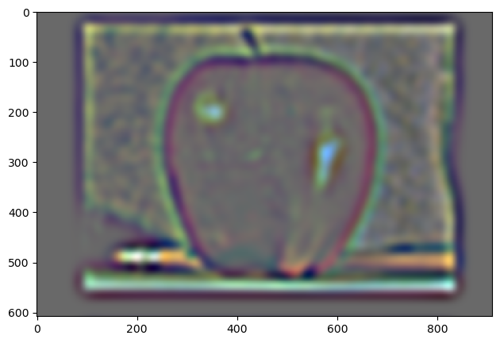

The gradient of my image I computed by convolving with the Dx and Dy operators, respectively. I was able to compute the magnitude by taking the RMS of the two resulting derivatives: np.sqrt(dx_im**2 + dy_im**2).
Boundary of Image (pixel values > 65)
1.2: Derivative of Gaussian (DoG) Filter
Below are images showing the results of applying the Derivative of Gaussian filter. Combining the Gaussian convolution operator with the differential operator yields the same result.
Upon smoothing the image prior to convolving it with the derivative operators, I observe that the boundary is far more well defined. It's thicker and smoother. Below, we see that combining the Gaussian convolution operator with the differential operator yields the same result.
2.1: Image Sharpening
The image sharpening was quite interesting and fun! I used a single filter for my sharpening: unsharp_mask_filter = (1+alpha)*impulse - alpha*kernel_3d.
Progression of Taj Mahal sharpening:
Initially, I made the error of normalizing my result instead of clipping, resulting in discoloration.
Progression of Taj Sharpening with different alpha values:
alpha = 1alpha = 2alpha = 5
Next, I tried sharpening with an image of my own. I was finding the best results with alpha = 5.
Original Cupcake
As a final experiment, I used an already sharp image, blurred it with a Gaussian filter, and resharpened. Here's my result!
Resharpened burger: actually turned out better than what I had initially! Again, alpha = 5.
2.2: Hybrid Images
For me, this was the most challenging portion of the project.
First, I made a hybrid image from Derek and Nutmeg.
Hybrid Image (Colored)Hybrid Image (B&W)
Fourier Analysis:
As expected, several high frequencies are filtered.
More hybrid images (first is a failure):
2.3: Gaussian and Laplacian Splits
Multiresolution blending was my favorite part of this project! Here, I got some of the most rewarding results. First, let's take a look at the Gaussian and Laplacian stacks of the two images to blend: apple and orange.
The stacks were 8 long, for clarity I'm only showing 5 elements: 1, 3, 5, 7, 8.
Apple gaussian:
Orange gaussian:
Apple laplace:

Orange laplace:
Next, I used a left-right divided mask to blend the two images. Gaussian kernels were used to blend the mask 8 times, each blend for the next element in the Laplacian stack. Shown is the 8th mask blend.
Below are the laplacian stacks that resulted from masking. Elements 0, 2, 4, and the sum of all 8 elements are shown.
Apple:
Orange:
Blended:
Here was my final result:
2.4: Multiresolution Blending
In this section are some of the other blending examples I tried.
First, I did a vertical line blend between a tiger and a lion.
Initial images:
Vertical blend:
The images are certainly quite different, thus the boundary (though blended alright) is clear.
Then, for my obscure-mask blend, I decided to use the same two images! However, now I'm trying to incorporate the elephant's trunk with the tiger's face.
Here, my primary issue was that the gaussian mask had a sigma a bit too high (or so I thought). When I tried to lower sigma, I was unable to fix this issue. Therefore, the lion was left with a trunk that's leaking gray onto its face a bit.
Overall, the blends turned out okay!
Here are the laplacian stacks for the tiger (row 1), elephant (row 2), and hybrid image (row 3). The final column is the normalized sum of the laplacian stacks.